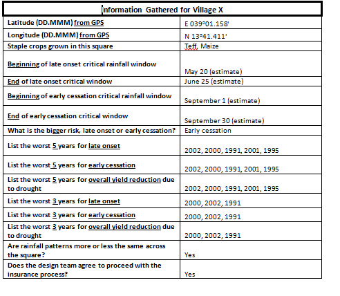

2. Checkpoint: Designing an Initial Weather Index By Hand
2.1. Topic: Designing an Initial Weather Index By Hand
2.1.1. Overview
IRI has developed software to aid in the creation and pricing of indices. In this exercise, you will mimic the process that the software uses by doing an index design of your own completely by hand, to gain insight into the index design process.
During this exercise, you will be receiving bits of new information in each :index:’Task’ as you progress through your index design. Your job in this exercise is very similar to how it would be in the real world - you are sometimes forced to make decisions with limited information and do the best job you can with what you have at that moment. However, by the end of this exercise, you will be able to develop an initial index. Other educational material will discuss how to strengthen and validate the index.
This activity consist of 6 main tasks:
- Gathering information about the village
- Proposing an index window
- Summing up historical rainfall estimates
- Calculating triggers and exits
- Calculating payouts
- How to begin pricing your index
2.1.2. Context:
This exercise is based on an example from the 2011 HARITA project in Tigray, Ethiopia. For the remainder of this exercise consider yourself as part of the HARITA project development team for 2011. Before an index is developed for a community, discussions should be held with farmers, community leaders and local experts to discuss relevant risk management strategies and cropping systems. For the sake of this exercise, it has already been determined that drought index insurance could be valuable to the farmers in the village and the community has requested that an index be designed to meet their needs. Your task is to design an index from start to finish. Good luck!
2.1.3. Task 1: Gathering information about the village: Village X
Community and expert feedback is important for developing an index. This includes key planting and flowering dates, as well as past drought years. Sometimes all the information you gather will not perfectly agree, but a general consensus should be reached. If applicable, it can also be valuable to reference other indices that have been developed for nearby villages, if the villages have similar agroclimatology and planting strategies.
Below, we have assembled consensus information from the community of Village X and local experts, while also taking into account the index of a neighboring similar village:
Your Task: Answer these questions before proceeding to the next step.
- What are the most important crops grown in Village X? _______________
- What is the preferred starting date of the critical window for the planting (late onset) stage? _______________
- What is the preferred ending date of the critical window for the planting (late onset) stage? _______________
- What is the preferred starting date of the critical window for the flowering (early cessation) stage? _______________
- What is the preferred ending date of the critical window for the flowering (early cessation) stage? _______________
- What is the biggest agricultural risk that Village X faces? _______________
- During which of the two windows would you rather have insurance coverage to best address this risk? Late onset (planting) or early cessation (flowering)? _______________
2.1.4. Task 2: Proposing an index window
Using the information provided in Task 1, it is now time to begin developing an index for Village X. In this task you will decide on appropriate index windows (start and end dates) for both the planting and flowering phases of the season; these two phase are intended to target the periods in which farmers identified their crops as being most vulnerable to drought. Be sure to come to a consensus in your group, and make use of the dekad conversion table on the next page.
Hint: The dates provided in the table in Task 1, may not always align perfectly with the start/end dates of a dekad. You may need to approximate in some cases.
Your Task: Decide on the below factors for your new index.
- Proposed start dekad for the planting window: ______________________________________
- Proposed end dekad for the planting window: _______________________________________
- Proposed start dekad for the flowering window: _____________________________________
- Proposed end dekad for the flowering window: ______________________________________
Now you have set the windows for both indices, but you still have to determine appropriate trigger and exit values for each index. Step 3 and 4 will help you do this.
| Start Day | Dekad | End Day |
|---|---|---|
| 1-Jan | 1 | 10-Jan |
| 11-Jan | 2 | 20-Jan |
| 21-Jan | 3 | 31-Jan |
| 1-Feb | 4 | 10-Feb |
| 11-Feb | 5 | 20-Feb |
| 21-Feb | 6 | 28-Feb |
| 1-Mar | 7 | 10-Mar |
| 11-Mar | 8 | 20-Mar |
| 21-Mar | 9 | 31-Mar |
| 1-Apr | 10 | 10-Apr |
| 11-Apr | 11 | 20-Apr |
| 21-Apr | 12 | 30-Apr |
| 1-May | 13 | 10-May |
| 11-May | 14 | 20-May |
| 21-May | 15 | 31-May |
| 1-Jun | 16 | 10-Jun |
| 11-Jun | 17 | 20-Jun |
| 21-Jun | 18 | 30-Jun |
| 1-Jul | 19 | 10-Jul |
| 11-Jul | 20 | 20-Jul |
| 21-Jul | 21 | 31-Jul |
| 1-Aug | 22 | 10-Aug |
| 11-Aug | 23 | 20-Aug |
| 21-Aug | 24 | 31-Aug |
| 1-Sep | 25 | 10-Sep |
| 11-Sep | 26 | 20-Sep |
| 21-Sep | 27 | 30-Sep |
| 1-Oct | 28 | 10-Oct |
| 11-Oct | 29 | 20-Oct |
| 21-Oct | 30 | 31-Oct |
| 1-Nov | 31 | 10-Nov |
| 11-Nov | 32 | 20-Nov |
| 21-Nov | 33 | 30-Nov |
| 1-Dec | 34 | 10-Dec |
| 11-Dec | 35 | 20-Dec |
| 21-Dec | 36 | 31-Dec |
2.1.5. Task 3: Summing up historical rainfall estimates: Village X
Drought indices can be triggered using rainfall data collected by rain gauges or satellites. There are advantages and disadvantages to both types of product and such decisions should be made on a project-by-project basis. In this example, decadal satellite rainfall estimates for the 10km by 10km square covering Village X are provided (on the next page). The satellite used to gather these measurements takes readings across all of Ethiopia, everyday. A cap of 25 millimeters has already been applied to this dekadal rainfall information. In other words, the maximum amount of rainfall that should be recorded for any dekad is 25mm
The start and end dates presented below might be in a format you have never seen before. For example the first start date is ‘1-Jan/23-Dec’. You should only look at the first date given (1-Jan), as this corresponds to the Gregorian (or Roman) calendar. The other date (23-Dec) is based on the local calendar in this example and should be ignored for this exercise.
Your Task: For the planting and flowering windows you selected in Step 2, add up the rainfall for every year since 1995. The table below will help you to do this. Then, in the third column, total the rainfall from the two phases (planting and flowering). Only use the first date listed in each box.
| Year | Planting | Flowering |
|---|---|---|
| 1995 | ||
| 1996 | ||
| 1997 | ||
| 1998 | ||
| 1999 | ||
| 2000 | ||
| 2001 | ||
| 2002 | ||
| 2003 | ||
| 2004 | ||
| 2005 | ||
| 2006 | ||
| 2007 | ||
| 2008 | ||
| 2009 | ||
| 2010 |
2.1.6. Task 4: Calculating triggers and exits
Imagine we were designing drought insurance for this village in 1994. Our goal over the next 16 years is to have one full payout, and about two or three smaller payments. Therefore, there would be a total of three to four drought years where farmers would have received a payment. Our job is to set the rainfall levels, below which farmers will start to receive a payment for drought. (If the farmers have both early (planting) and late (flowering) phase protection, then they may get payouts from either index. This may increase the number of years in which they receive a payout.)
This payout strategy balances providing coverage for bad years with the cost of insurance. A farmer may wish to receive more full payouts and larger partial payments, but that type of additional coverage will typically cost more and not be very practical.
For the remainder of this exercise we will be focusing on targeting drought during the Flowering Phase; the period that the farmers identified as most critical. We will develop an initial index only for the flowering phase. You would need to repeat the following steps for the planting phase to create an additional index that also provided protection during the early part of the season.
Note: Using the table that you have created in step 3, rank the Flowering Phase rainfall totals for each year. Place the year with the highest rainfall at the top of the list, next to the “1”, and the year with the lowest rainfall total at the bottom of the list, next to the “16”. Fill in the rest of the years according to this strategy:
1._____________
2._____________
3._____________
4._____________
5._____________
6._____________
7._____________
8._____________
9._____________
10._____________
11._____________
12._____________
13._____________
14._____________
15._____________
16._____________
Your Task: (You may also want to look at which years the community and local experts indicated as being the worst -remember the chart in Task 1)
- In your opinion, out of the full list of 16 years, what is the one year that farmers should have received a maximum/full payment? __________________________________________________________________
- In your opinion, what is your exit value, in millimeters, or the rainfall total below which farmers should receive a full payment? As a guess, take the average between the worst year (#16) and the second worst year (#15). ____________________________________________________________________
- On your ranking of years (above), draw a line showing this “exit” value and label it.
- Besides those selected in question # 1, what are the two or three additional years that farmers should have received a payment? ____________________________________________________________________
- In your opinion, what is the trigger value in millmeters, or the rainfall total below which farmers should receive any type of payment? As a guess, take the average between the fourth worst year (#13) and the fifth worst year (#12). _____________________________________________________________________
- On your ranking of years (above), draw a line showing this trigger value. Years falling between the trigger and the exit values will receive a partial payment. These partial payment years should have fell during years of medium-sized droughts. Any year below the exit would have had a full payout. These payment years should fall during years of severe drought.
2.1.7. Task 5: Calculating payouts
A Payout Formula is used to calculate what percentage of the maximum payout is owed to the farmer for each index. When the rainfall (X) is above the trigger, there is no payout. That means that the payout is equal to zero and you do not need to use the formula below. If the rainfall is between the trigger and the exit, than use the formula to calculate the exact payout percentage. It the rainfall is below the exit than there will be a full payout (100%), meaning that the maximum payout is owed to the farmer and you do not need to complete a calculation.
- Payout =[(Trigger - X) / (Trigger - Exit)] x 100%
- X = that index’s rainfall total (the rainfall total during that window w/the cap applied
Your Task: Using your trigger and exit from Step 4, calculate the payout for each year for the Flowering Phase Index. Record the payout for each year below:
1995: _____________
1996: _____________
1997: _____________
1998: _____________
1999: _____________
2000: _____________
2001: _____________
2002: _____________
2003: _____________
2004: _____________
2005: _____________
2006: _____________
2007: _____________
2008: _____________
2009: _____________
2010: _____________
Discussion: The more payout years (and larger payouts) your index has, the more expensive it will be for farmers to purchase. Thus indices that have the same exit but a higher trigger will be more expensive than indexes with lower triggers. Step 6 will further discuss index pricing.
2.1.8. Task 6: How to begin pricing your index
This section is an introduction to pricing an index. Using the information below you will begin to analyze the price of the index you have created. These pricing parameters will be discussed and analyzed in greater depth in other Educational Exercises.
Note that all the pricing values are given in percentages. These numbers are given in terms of the maximum payout that a farmer can receive. In these educational exercises, the maximum possible payout is set to be 100 to enable you to think of payout values as a percentage. For example if a value is equal to 20%, then it is 20 percent of the maximum payout that the farmer can receive. If the maximum payout is 100 dollars, then the value for this payout is 20 dollars.
The final Market/Farmer Price of the index is a combination of the Average Payout and Loading values. The Market/Farmer Price is the price the farmers will actually pay to hold the insurance.
Market/Farmer Price = Average payout + Loading
Step 1: Average Price: When beginning to price your index, you should start by calculating the Average Payout. The Average Payout is the amount (on average) that the farmers will receive each year they hold the insurance, including years where they receive no payment. The final price of your index must be greater than that of the average payout. Think about it: Why is this?
Average payout = (Sum of all payouts) / total number of years (in this case, 16)
Your Task:
Calculate the Average Payout of your Flowering Phase index and enter it here: ___________
Step 2: Loading: From here there are additional costs, or “Loading” that should also be factored into the final Market/Farmer price of the index. These include:
- Cost of financing the risk
- Administrative and delivery costs
- Costs due to uncertainty
Loading = Cost of financing the risk + Administrative and delivery costs + Costs due to uncertainty
For now we will specifically focus on Loading due to the “cost of financing the risk”. By calculating this part of the Loading and accounting for it in the market/farmer price, we can get a starting price from which to work. We will take a more in depth look at all of these Loading considerations in the WIIET and Pricing Educational Sections.
Discussion: Loading due to the “cost of financing the risk”: In addition to the average payout, the insurance company must maintain sufficient capital on hand to be able to cover extreme payouts. Insurance companies will choose (or be required by regulations) to keep sufficient liquidity to honor payouts and must pay interest on this money, which contributes to the price of the insurance.
Commonly, the money for extreme payouts is borrowed from the insurance company’s shareholders, so the interest paid is the return on the shareholders’ investment in the company. This money is held specifically to manage risk, as opposed to being put into investments (such as agricultural inputs) that would provide returns through production.
Often, insurance companies hold enough money to cover their best estimate of the largest payout they anticipate happening in 100 years. In our case, we know that a full payout is the maximum payout, and it is likely to happen multiple times in 100 years, because it would have happened in the past 15 years.
Holding enough money to cover extreme events is a fundamental cost of risk management. An individual farmer faces a similar choice whether she purchases insurance, maintains savings ‘for a rainy day’, or borrows to cover losses after the drought has occurred. It is the basic tradeoff of how much money to keep liquid in case there is drought versus the money that is put at risk for higher returns by investing in inputs to a productive activity that may experience a loss.
From a risk financing perspective, the key difference between the insurance company and the farmer is that the insurance company can build a large portfolio of unrelated (or even opposite) risks. This way the amount of money that must be held is less than the farmer would have to reserve. Premiums (payments) received each year by the insurance company can also be used as payouts that year, reducing the amount of money that must be borrowed.
The formula for calculating the Loading due to the cost of financing risk is:
Loading due to the cost of financing risk = cost of capital x (Maximum Payout-Average payout)
For this example, set the “cost of capital” on the right hand side of this formula to 0.10. This means that the insurance company must pay ten percent interest on the money it borrows to honor large payouts.
Your Task:
Calculate the Loading due to the cost of financing risk of your Flowering Phase index and enter it here: _____________________________________________________
Step 3: Calculating an Initial Market/Farmer Price (risk price)
Here you will calculate an Initial Market/Farmer Price, also known as a risk price, by adding the Average Payout and the Loading due to cost of financing. This is only a starting point for figuring out the final market/farmer price; you have yet to consider other Loading factors, such as: 1. Administrative and delivery costs, and 2. the Cost of uncertainty.
Risk Price = Average Payout + Loading due to the cost of financing risk
Your Task:
Calculate the Risk Price of your Flowering Phase index and enter it here: ________
You should be aware that this is a working price for design purposes and is likely to be somewhat different than the final price of a transacted contract. The actual price of the insurance tends to be higher than the starting prices you calculate here, due to the additional Loading costs mentioned above. You will explore these factors further in other Educational Activities. In addition, the actual price of the insurance will most likely be negotiated between the project stakeholders, and may be calculated using different formulas than those built into the pricing module.

{kind=link}